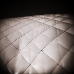

Not only was 2006 the first whole year of shifting pixel, it was a solid year. Here are the highlights:
- January
- Photographed the Swanson Tennis Center with my Holga.
- February
- The month of February was pretty slow. I took a break from everything to recoup and re-energize.
- March
- Gazebo was featured at photojunkie SQUARED on March 4.
- Basement 1 was featured in the photo gallery of Bending Light Magazine Issue 2: Angst on March 14.
- Greased Lightbox was featured on productivity blog, Lifehacker, on March 16.
- Greased Lightbox was featured on the front page of Digg on March 16.
- April
- Purchased two wonderful lenses—the Canon EF 50mm f/1.4 USM and the Canon EF 70-200mm f/2.8L IS USM. These two lenses were also my first Canon lenses, entirely replacing my poor, old, Tamron.
- May
- untitled was the photo of the day on May 5 at MUTE.
- a hangar in a field was added as No. 628 in The Collection at FILE Magazine on May 10.
- Switched from Pixelpost to WordPress with a new design.
- June
- Apparently nothing worthwhile happened in June.
- July
- Swanson Tennis Center 1 and Swanson Tennis Center 5 appeared in the Seventh Annual Arts Center of Saint Peter Members Exhibit from July 27 until September 10.
- shifting pixel turns one year old on July 31 and throws a birthday party featuring four other photographers.
- August
- At the flea market was featured at Flak Photo on August 7.
- September
- Introduced print ordering on September 16.
- Photographed Why Sam is Voting Democrat at the Minnesota State Fair.
- Held a free print giveaway from September 30 until October 14.
- October
- Four photos are featured in Swedish Touches: Recipes and Traditions edited by David Wright and Martha Wiberg Thompson (Penfield Books, October 11).
- Pink Elephant Revisited, Ring of Fire Revisited, and Inside the Alligator Head appeared in Mix it Up, an invitational art exhibit, at the Arts Center of Saint Peter from October 19 until November 12.
- November
- chairs 2, chairs 6, and Cabinets two and three were featured in Metro Screen’s 2007 brochure that was published in November. chairs 5 made the cover.
- Rock, tree was featured at WeeklyShot in the Dramatic Light theme on November 6.
- Why Sam is Voting Democrat was featured in the photo gallery of Bending Light Magazine Issue 4: Worth a Thousand Words on November 7.
- Purchased my first macro lens—the Canon MP-E 65mm 1-5X Macro—along with the Canon Macro Twin Lite MT-24EX.
- December
- Joined the 9rules network on December 21.
What about 2007?
Now that 2006 is over, there are a lot of great directions that shifting pixel could be headed.
Right now, please head over to the 2007 Bloggies and help kick 2007 off to a great start. Nominate your favorite blogs (*wink, wink*) in all of the appropriate categories (hurry, nominations close today January 18 January 11 at 10 p.m. EST). I know, I am a little late on this, but I figured now is better than never. It will only take a minute of your time and it’ll be totally awesome.
Finally, Thanks
Without you coming here and looking at my photos, I probably wouldn’t be writing this right now. I probably wouldn’t have gone so long with this blog, and I probably wouldn’t have such a neat list of 2006 to share. Your comments and support keep this thing running, and I’d like to thank you for that. I have had a great time and I think things can only get better from here.
Edit (1/10/2007) – Changed bloggies closing today to bloggies closing January 18… An 8 and a 0 look awfully similar at 7 a.m.. Still, head on over and nominate your favorite blogs.
Edit (1/11/2007) – Changed closing to the 11th. I’m an idiot. Thanks Sam!


6 Comments
January 10th, 2007 at 11:42 pm
Hooray for ShiftingPixel brought to us all by Joe Lencioni!
January 10th, 2007 at 11:44 pm
Thanks Andrew! Hooray!
January 11th, 2007 at 5:19 pm
Voting actually closes tonight at 10pm eastern.
January 11th, 2007 at 5:33 pm
Gosh, I’m dumb. I’ll fix it.
January 22nd, 2007 at 2:05 am
Wow Joe, when did you start this?
January 22nd, 2007 at 7:28 am
Hey Eric, long time no see. To answer your question, shifting pixel started on July 31, 2005.